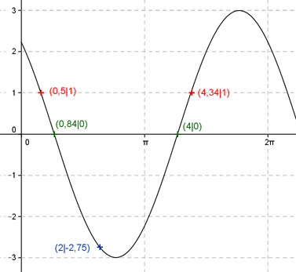

Aufgabe 221 Berechnen Sie die Amplitude von: y = -2 sin x + √5 cos x x 2 0,5 oder 4,34 y -2,75 1 Amplitude = 3 (Berechnung siehe unten); Periode = 2π Berechnung der Nullstellen: 0 = -2 sin x + √5 cos x |+2 sin x 2 sin x = √5 cos x |:cos x 2 sin x sin x --------- = √5 mit ------- = tan x cos x cos x 2 tan x = √5 | :2 √5 tan x = ---- --> 2 √5 x = arc tan 2 - ---- = 0,84 gerundet 2 x1 = 0,84 oder 48,1°. x2 = (π + 0,84) = 4 gerundet oder 229,2°.  Berechnung der Amplitude A: Sie tritt an den Stellen 4 - 0,84 x = 0,84 + (----------) = 2,42 oder 138,66° oder 2 bei (π + 2,42) = 5,56 oder 318,56° auf. Amplitude = = |f(2,42, 5,56)| =|-2 sin 2,42 + √5 cos 2,42| = = |-2 sin 5,56 + √5 cos 5,56| = |1,32 + 1,68| = 3.